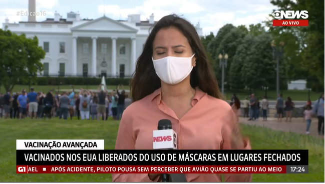

Projeto Final Itaú Formação Tech Edição
O centro de controle e prevenção de doenças atualizou suas recomendações sobre a covid-19, permitindo que pessoas que já tenham tomado todas as doses da vacina permaneçam sem máscara em ambientes abertos ou fechados.
Para as pessoas já totalmente imunizadas também deixa de ser obrigatório manter o distanciamento social. A nova diretriz só não vale quando há uma regra especifica dizendo o contrário.
Como informa “The New York Times” cerca de 154 milhôes de habitantes haviam recebidos pelo menos uma dose da vacina da Covid-19, entretanto apenas um terço da população teve a imunização plena.
Hoje o país utiliza três tipos de imunizante a Pfizer/BioNTech, a Moderna e a Janssen.
O EUA já anuncia um novo retorno ao “normal”, as máscaras que geraram polêmicas quanto o seu uso, podem deixar de utilizadas, a partir de que todos os cidadãos decidam se imunizar.
Sabe-se que as pessoas mesmo vacinadas podem desenvolver a doença, mas de forma mais branda.
